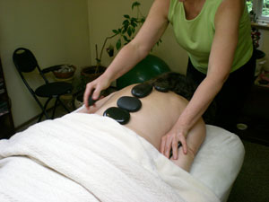

Jade Forest Massage
"Healing in the Heart of Nature"
What is Healing Stone Massage?
In this comforting and healing massage, stones of various sizes and weights are used in flowing strokes on the the body after hands-on massage. They are then settled comfortably into the body contours on areas that tend to hold tension, like the back muscles, abdomen and neck. The stones are usually warm but occasionally cool to refreshingly cold stones may also be part of your treatment. Each session is individually tailored to meet your needs.
All sessions offer aromatherapy, using seasonal organic essential oils. The massage work itself draws from a variety of techniques including Swedish, polarity, shiatsu, myofascial release, lomilomi, Reiki, and connective tissue work. A session usually involves a mixture of these techniques, depending on the needs of the individual.
I advise observing your body and emotions over the 24-48 hours following a massage. Being the silent witness in your healing process can offer you new insights and can be helpful to me as your practitioner.